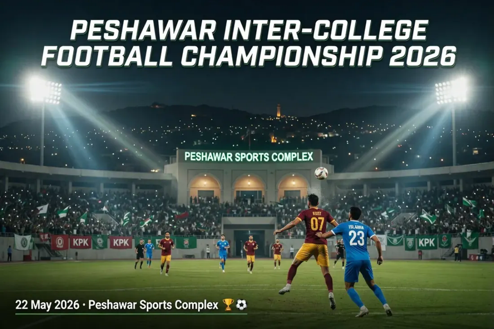
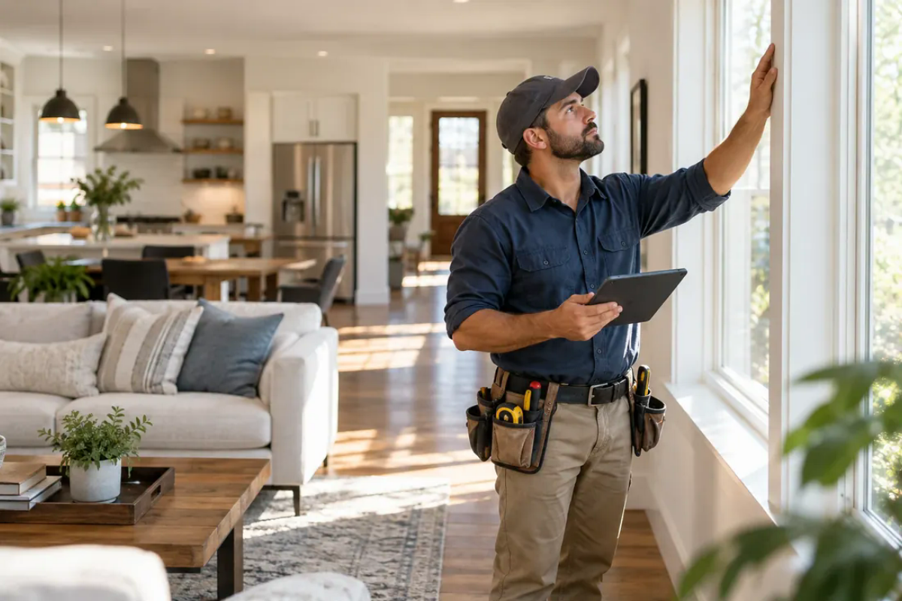
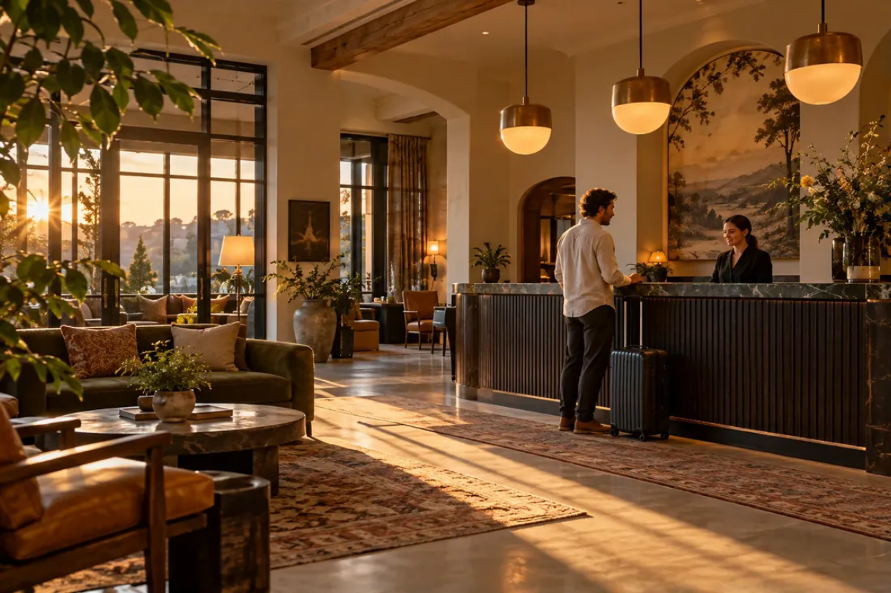

Understand the friction
Map who does what today, where time is lost, and what a useful improvement should enable.
WEB DEVELOPER · AI & AUTOMATION BUILDER
I’m Umar, a computer science graduate who turns everyday business workflows into clear web experiences and practical automation prototypes. Explore the problem, try the interaction, and see how each idea works.
MY FLAGSHIP PROJECTS
Two substantial projects with real product logic, user roles, and interactive demos. Each case study separates working code from sample preview features.
Order assistant, staff approvals, status updates, sales dashboard. 67 automated tests pass.

Sports events, player applications, community posts, event chat and admin tools.
PRODUCT THINKING · PROTOTYPES
Each concept starts with a familiar business friction, then makes a better customer or team workflow tangible. Fictional brands; real interactions.
PRODUCT STUDIES / 07
Seven interactive product studies across hospitality, travel, home services, customer support, operations, and ecommerce. Choose a workflow and try the idea.
Pain point: menus create friction at decision time. Try a clear menu and instant sample order total.
Pain point: trip planning starts with too many options. Choose preferences to shape a sample route.

CLEARHOME / SERVICE ESTIMATESQUOTEPain point: unclear quotes slow down booking. Adjust service choices to see a transparent estimate.
Guide common questions to approved answers and move uncertain requests into a human-review queue.
Turn provider and payer follow-ups into a clear, exportable operations queue.

STAYWISE HOUSE / OPERATIONSGUESTConnect a direct-booking request with the team’s sample arrivals and room view.
Give a small shop one view of new orders, packing steps, and stock checks.
A CLEAR WAY TO BUILD
No made-up testimonials. Here is the practical process I use to turn a conversation into something a team can inspect and try.
Map who does what today, where time is lost, and what a useful improvement should enable.
Agree on the simplest useful scope, user journey, and what counts as done before building.
Build an accessible, responsive experience with clear states and realistic sample content.
Walk through key scenarios, explain what is live versus a prototype, and document next steps.
A LITTLE ABOUT ME
I have a BS in Computer Science and hands-on experience in medical credentialing operations. That work taught me to communicate clearly, keep details organized, and solve real workflow problems.
Now I'm focused on building web projects and learning AI tools that can make small businesses run more smoothly—from better customer experiences to helpful automations.
More about working together ↗WHAT I'M WORKING WITH
I keep learning by building. These are areas I use, explore, or am actively developing through hands-on projects.
HTML · CSS · JavaScript
Python · REST APIs · Git
LLMs · chatbots · workflow ideas
Responsive UI · Canva · prototypes
QUICK ANSWERS
A short, clear guide to what is shown here and how to discuss a project.
Umar works on responsive websites, web application interfaces, practical workflow prototypes, and early AI or automation concepts. Project scope is agreed after a discovery conversation.
The portfolio demos use sample data. Restaurant AI has a Node.js project with 67 automated tests passing; its external WhatsApp and local AI integrations have not been verified here. SportsHub and the product studies are presented as interactive previews, not live services.
Send Umar a short description of the users, workflow, and problem you want to improve through WhatsApp, email, or LinkedIn. He can then suggest a practical first step.
HAVE A PROJECT IN MIND?
Tell me what you're working on. I’m open to web projects, practical prototypes, and AI workflow ideas.
Share the workflow you want to improve. We can start with a short discovery conversation.